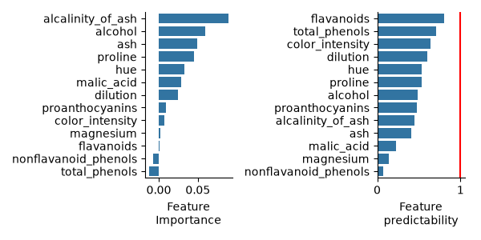
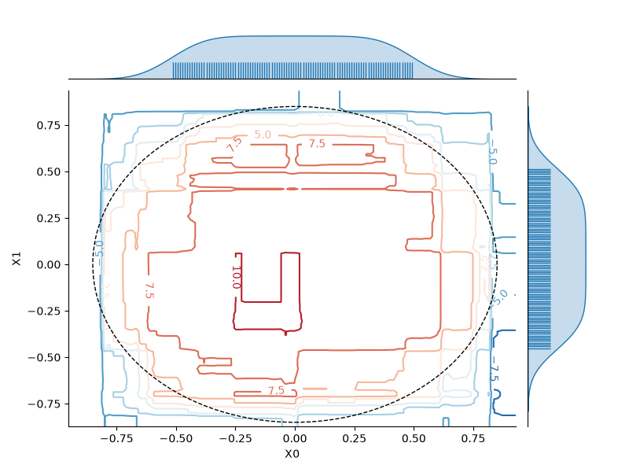
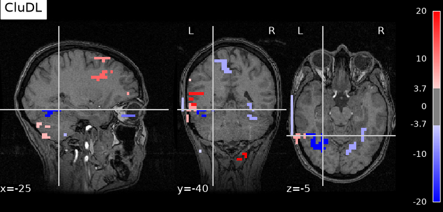

HiDimStat: High-dimensional statistical inference tool for Python#


The HiDimStat package implements different estimators that compute variable importance for single or groups of features, and perform variable selection with statistical guarantees. The library provides statistical inference methods to solve the problem of support recovery in the context of high-dimensional and spatially structured data.
Documentation & Examples#
API documentation about the main HiDimStat functions is available here, and a User guide provides further details on the various variable importance methods and concepts used in the library.
You can find examples for each Variable Importance Method: LOCO, LOCI, PFI, CFI, Desparsified Lasso, DCRT, Model-X Knockoffs, SAGE, Cluster Importance, and Ensemble Importance.

The library implements two different feature importance visualization methods such as Partial Dependency Plot and Accumulated Local Effects

You can find here applications to spatially structured data, such as fMRI data, somatosensory MEG data, or the MNIST digit dataset

All examples are available there. If you have cloned the repository, you can run any of the examples locally by running the following command in a terminal:
python examples/plot_2D_simulation_example.py
To run examples it is necessary to install the seaborn package.
Some additional dependencies might be required depending on the target example
to run. You can find further instructions on building the documentation
here.
Installation & Dependencies#
HiDimStat works only with Python 3, ideally Python 3.10+. To install, run the following from a terminal in your Python environment:
pip install hidimstat
Or if you want the latest version available, to contribute to the development of this project for instance:
git clone https://github.com/mind-inria/hidimstat.git
cd hidimstat
pip install -e .
HiDimStat depends on the following packages:
joblib >= 1.4
numpy >= 1.19.5
pandas >= 2.2
scipy >= 1.13
scikit-learn >= 1.6
tqdm >= 4.66.3
References#
If you use our package, we would appreciate citations to the relevant aforementioned papers. You can also contact us by opening an issue on the Github repository to share your work which we would love helping to promote it.